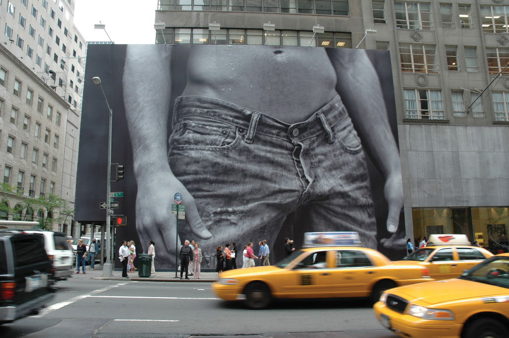
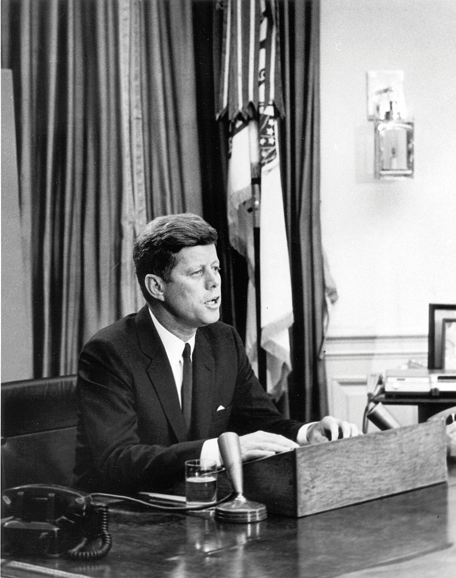
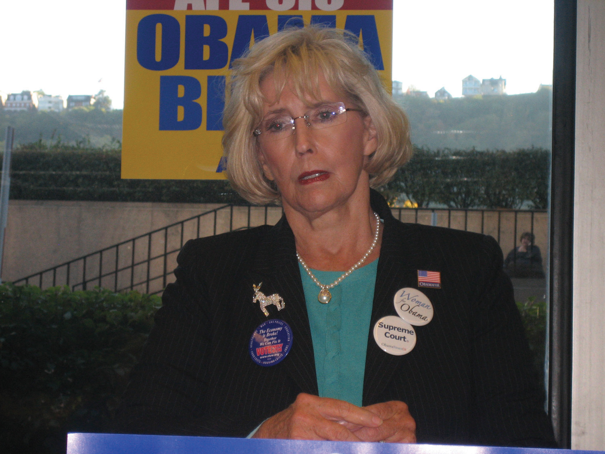

Great strides have been made in recent decades in eliminating the smears of discrimination from many facets of society such as voting rights, property ownership, and education. In the workplace, however, systematic discrimination continues to take its toll on many. This chapter explores workplace discrimination and examines the legal remedies available to those who believe they may be victims of discrimination. After reading this chapter, you should be able to answer the following questions:
Figure 12.1 An Abercrombie & Fitch Billboard in New York City
Source: Photo courtesy of FaceMePLS, http://www.flickr.com/photos/faceme/2536281153.
Figure 12.1 "An Abercrombie & Fitch Billboard in New York City" shows a billboard for Abercrombie & Fitch (or A&F, as it’s sometimes known), a clothing retailer. The Columbus, Ohio–based company generates nearly $2 billion in sales annually by selling clothes in retail locations throughout North America, Europe, and Asia. As the billboard suggests, A&F’s marketing concept (which it calls “Casual Luxury”) is based heavily on portraying a certain image. How would you characterize that image? If you used adjectives like athletic, young, all-American, sexy, or attractive, you would be correctly identifying the company’s strategy. The strategy works as it has helped the company generate hundreds of millions in profits for its shareholders.
A&F relies on a message that boils down to convincing its young consumers that by wearing A&F clothing, they will also be young, athletic, and attractive. If consumers don’t believe that message, they will likely abandon the brand for another in this hugely competitive segment. To maintain the authenticity of that marketing message, A&F rigorously hires only models that fit a certain image in print and Web advertising. It extends this practice to store workers so that any time a customer interacts with A&F, that brand image is reinforced.
Is it illegal for A&F to hire only “attractive” people to work in its stores? The answer is no, just as it’s not illegal for Vogue magazine to hire only attractive models, or for a cosmetics company to hire only salespeople with clear skin. Under the employment-at-willLegal doctrine that employees can be hired and fired at the will of the employer. doctrine, workers in the United States are free to work for whomever they want to (or not work at all), and employers are free to hire whomever they want to, and fire them at will. The vast majority of workers in the United States are covered by the at-will doctrine.
If you came in to work with green hair, you could be fired. If you came in to work with a visible body piercing or tattoo, you could be fired. If you get into an argument with your boss about whether baseball or basketball is a better sport, you could get fired. Companies can fire workers for smoking cigarettes, even at home. Companies can fire employees who say anything disparaging or negative about their bosses or the company, even on a private Facebook page. Narrow exceptions lie in the law, such as a company that enters into a written contract to hire a worker for a specified period of time. (Even then, many employment contracts specify at-will status for the worker.) If A&F wishes to engage in “looks-based” discrimination and refuses to hire workers who are overweight, ugly, or have pimples, then it is free to do so under U.S. law.
A problem arises, however, if “all-American casual luxury” starts to suspiciously become another way to say “all-white.” Many of A&F’s competitors, such as Gap, Aéropostale, American Eagle, and J. Crew, market their clothes on a similar “all-American” theme, but their models and store workers tend to look more diverse than those at A&F. If A&F is using its “beautiful people only” marketing to hide a more sinister plan to discriminate against racial minorities, then A&F is breaking the law.
http://www.npr.org/templates/story/story.php?storyId=4174147
In 2004 several former workers at A&F as well as job applicants denied employment filed a lawsuit against A&F for racial discrimination. The company paid $50 million to settle the claim and hired a vice president for diversity.
Discrimination, then, is not always illegal. A&F can discriminate against ugly people and Vogue can discriminate against fat people. When is discrimination illegal? Under what circumstances can employers draw lines of classification within the general population? When does a person fall into a protected classA legislatively created category of workers that are protected from unfavorable employment actions due to their membership in the protected class. that the law recognizes? What must a disappointed worker be able to prove to demonstrate illegal discrimination? In this chapter we’ll explore these issues so that as future business professionals, you’ll have a sense of what you can and cannot do when it comes to hiring, managing, and firing employees.
Workers in the United States are hired and fired at will, meaning they can be hired or fired for any reason and at any time. Workers in a protected class may be protected if they can demonstrate that they were discriminated against because they were members of a protected class.
On June 11, 1963, President John F. Kennedy delivered a speech to the nation describing the peaceful resolution to a tense standoff in Alabama after a federal court ordered the admission of two black students to the University of Alabama. He used the occasion to rail against continued discrimination against African Americans a century after the Civil War. “Next week I shall ask the Congress to act, to make a commitment it has not fully made in this century to the proposition that race has no place in American life or law…I am asking Congress to enact legislation giving all Americans the right to be served in facilities which are open to the public—hotels, restaurants, retail stores, and similar establishments. This seems to me to be an elementary right. Its denial is an arbitrary indignity that no American in 1963 should have to endure, but many do.” You can listen to the entire speech, and read the transcript of the speech, through the hyperlink.
Figure 12.2
President John F. Kennedy made passage of the Civil Rights Act a key part of his presidency.
Source: Photo courtesy of Abbie Rowe, National Park Service, http://www.jfklibrary.org/Asset+Tree/Asset+Viewers/Image+Asset+Viewer.htm?guid={0AFA0FD7-9DBA-4467- B051-44A6DD69C48A}&type=Image.
In 1963 President Kennedy called for the passage of a sweeping civil rights bill in response to intransigent racial segregation. The bill was vehemently opposed by many in Congress, including avowed segregationists who saw the bill as an intrusion on states’ rights. Kennedy was assassinated before he could see the bill passed into law, but his successor President Johnson carried Kennedy’s wish forward through aggressive lobbying of Congress to pass the bill. At its core, the bill was designed to integrate African Americans into the mainstream of American society. Today, the Civil Rights Act of 1964 has broad significance for all racial minorities, religious organizations, and women.
The bill has several provisions, but the most important for businesses is known widely as “Title VII.” It applies to employers with more than fifteen employees. It eliminates job discrimination on the basis of
Any act of discrimination on any of these bases is illegal. These acts may be a refusal to hire, a discharge or termination, a temporary layoff or retrenchment, compensation, an opportunity for advancement, or any other term or condition of employment. For example, employers are not permitted to maintain all-white or all-black work crews even if they can demonstrate that doing so is good for business or morale. Title VII also prohibits acts of retaliationAny adverse employment action taken against an employee who has filed, or is contemplating filing, charges of illegal discrimination. against anyone who complains about, or participates in, any employment discrimination complaint. Employers need to be very careful about this provision, because while the employer may be innocent of the first charge of discrimination, taking any subsequent action after an employee has complained can be a separate charge of discrimination. Once an employee has made a complaint of discrimination, it is very important that the employer not alter any condition of his or her employment until the complaint has been resolved.
The law does, however, allow discrimination on religion, sex, and national origin if there is a bona fide occupational qualification (BFOQ)A legitimate reason for why an employer might discriminate against someone who belongs to a protected class. reasonably necessary for normal business operations. For example, a Jewish synagogue may restrict hiring of rabbis to Jewish people only, and a Catholic church can restrict hiring priests to Catholic men only. A nursing home that caters exclusively to elderly women and is hiring personal assistants to help the patients with personal hygiene and dressing may restrict hiring to women only as a BFOQ. Victoria’s Secret can legally discriminate against men in finding models to advertise and market their products. A movie producer can legally discriminate between men and women when casting for certain roles such as a woman to play Bella and a man to play Edward in the popular Twilight series. Since BFOQ discrimination extends to national origin, a play producer casting for a role that specifically calls for a Filipino can legally restrict hiring to Filipinos only. A gentlemen’s club can hire women only as a BFOQ.
Managers should be very careful in applying BFOQ discrimination. It is an exception that is very much based on individual cases and subject to strict interpretation. The BFOQ must be directly related to an essential job function to be “bona fide.” Customer preference is not a basis for BFOQ. For example, a taxi company cannot refuse to hire women as taxi drivers even if the company claims that customers overwhelmingly prefer male drivers, and airlines cannot refuse to hire men even if surveys show customers prefer female flight attendants.
http://www.time.com/time/magazine/article/0,9171,987169,00.html
The Hooters restaurant chain hires scantily clad women exclusively as servers, refusing to hire men for that role. Men are hired for other roles such as kitchen staff and hosts. In 1997 a group of men sued Hooters for sex discrimination. Without admitting any wrongdoing, Hooters settled the claim. Hooters says that its policy of hiring only women to act as servers is a bona fide occupational qualification. What do you think?
Hooters has also been accused by women’s groups of only hiring women who fit a certain profile that discriminates against anyone who management deems to be unattractive or overweight. Do you believe Hooters should be able to take these factors into account when making hiring decisions?
Note that race and color are not on the list of acceptable BFOQs. This means that in passing the law, Congress made a determination that there is no job in the United States where race or color is a bona fide occupational qualification. A country-and-western-themed restaurant, for example, may not hire only white people as wait staff.
Title VII creates only five protected classes. Various other federal and state laws, discussed in Chapter 12 "Employment Discrimination", Section 12.3 "Other Federal Antidiscrimination Laws", create other protected classes. Many other classes, such as weight, attractiveness, and height, are not on the list of protected classes. Contrary to popular belief, there is also no federal law that protects against discrimination on the basis of sexual orientation. National restaurant chain Cracker Barrel, for example, for many years maintained an open policy of not hiring homosexuals and dismissing any person who came out at work. It was only under pressure from shareholder activists that the company finally rescinded its discriminatory policy.
http://www.npr.org/templates/story/story.php?storyId=113719460
Since 2007 Congress has been debating the Employment Non-Discrimination Act (ENDA)A proposed bill that would apply to nonreligious employers with more than fifteen employees and prohibit discrimination on the basis of sexual orientation or gender identity.. The law would specifically prohibit employment discrimination on the basis of sexual orientation. The House passed the bill in 2007, but it died in the Senate. In 2009 new attempts were made at passing the law, but strident partisanship once again ended chances of passage, as this NPR story explains. Do you believe this law should be passed? If it passes, do you see an inconsistency with the Defense of Marriage Act, which prohibits federal recognition of same-sex marriage?
Note too that Title VII does not prohibit all discrimination. Employers are free to consider factors such as experience, business acumen, personality characteristics, and even seniority, as long as those factors are related to the job in question. Title VII requires employers to treat employees equally, but not identically.
Title VII is a federal law, but it does not give victims of discrimination the immediate right to file a federal lawsuit. Instead, Title VII created a federal agency, the Equal Employment Opportunity Commission (EEOC)Federal agency established by the Civil Rights Act of 1964 to enforce antidiscrimination laws. to enforce civil rights in the workplace. The EEOC publishes guidelines and interpretations for the private sector to assist businesses in deciding what employment practices are lawful or unlawful. The EEOC also investigates complaints filed by workers who believe they are victims of unlawful discrimination. If the EEOC believes that unlawful discrimination has taken place, the EEOC can file charges against the employer. Even if the employee has signed a predispute arbitration clause with the employer agreeing to send employment disputes to arbitration, the Supreme Court has ruled that the predispute arbitration clause does not extend to the EEOC, which can still file a lawsuit on the employee’s behalf in federal court.EEOC v. Waffle House, Inc., 534 U.S. 279 (2002).
Figure 12.3 Lilly Ledbetter
A jury found Lilly Ledbetter was the victim of regular pay discrimination at Goodyear because of her gender.
Source: Photo courtesy of aflcio, http://www.flickr.com/photos/labor2008/2928072316/sizes/o/in/photostream.
Employees must file Title VII charges with the EEOC first before going to court. If the EEOC investigates and decides not to pursue the case any further, the EEOC can issue a “right to sue” letter. With that letter, the employee can then file a case in federal court within 90 days of the date of the letter. Any EEOC complaint must be filed within 180 days of the alleged discriminatory act taking place. This deadline is generally extended to 300 days if there is a state agency that enforces a state law prohibiting discrimination on the same basis. If employees wait beyond 180 or 300 days, their claims will be dismissed. The question of when the clock begins was the subject of much debate recently when a female manager at Goodyear, Lilly Ledbetter (Figure 12.3 "Lilly Ledbetter"), discovered she had been paid unequally compared to males for many years. She filed a Title VII lawsuit in federal court and won several million dollars in damages. At the Supreme Court, however, a narrow 5–4 majority opinion authored by Justice Alito held that she had to file her claim within 180 days of any decision to pay her unequally, which had happened many years ago.Ledbetter v. Goodyear Tire & Rubber Co., 550 U.S. 618 (2007). She therefore lost her case and her damages award. In response, Congress passed the Lily Ledbetter Fair Pay Act of 2009Federal law that resets the time to file a charge in unequal pay cases every time a discriminatory paycheck is received., which gives victims the right to file a complaint within 180 days of their last discriminatory paycheck.
The EEOC has the authority to award several remedies to victims of discrimination. These include the award of back pay for any lost wages, the issuance of an injunction to stop the employer from making any continuing acts or policies of discrimination, ordering a terminated or demoted employee reinstated to his or her prior position, and the award of compensatory damages for out-of-pocket costs resulting from the discrimination as well as emotional harm. Attorneys’ fees may also be recoverable. In cases of severe or reckless discrimination, punitive damages are also available. Punitive damages are capped by amendments to Title VII passed in 1991. These caps start at $50,000 for employers with less than one hundred employees and rise to $300,000 for employers with more than five hundred employees.
Anyone who files a Title VII claim in federal court must prove his or her claim using one of two possible theories. The first theory, known as disparate treatmentIntentional discrimination against a member of a protected class., alleges that the defendant employer acted intentionally to discriminate against the victim because of the victim’s membership in a protected class. Winning a disparate treatment case is very hard because it essentially requires proof that the defendant acted intentionally, such as a statement by the defendant that it is not hiring someone because of that person’s race, an e-mail to the same effect, or some other sort of “smoking gun” evidence. If a defendant wants to discriminate against someone illegally in the workplace, it is very unusual for it to say so explicitly since under the at-will doctrine, it is easy for an employer to find a lawful reason to discriminate.
Under Supreme Court precedent, a plaintiff wishing to demonstrate disparate treatment has to first make out a prima facie case of discrimination, which involves demonstrating that he or she is a member of a protected class of workers.McDonnell Douglas v. Green, 411 U.S. 792 (1973). He or she applied for a job that he or she is qualified for, and the employer chose someone else outside of the plaintiff’s class. Once that demonstration has been made, the employer can rebut the presumption of discrimination by arguing that a legitimate, nondiscriminatory reason existed for taking the adverse action against the plaintiff. If the employer can state such a legitimate reason, then the burden of proof shifts back to the employee again, who must then prove by a preponderance of evidence that the employer’s explanation is insufficient and only a pretext for discrimination. This last step is very difficult for most victims of intentional discrimination.
If a victim is unable to find proof of disparate treatment, he or she may instead use a theory called disparate impactA theory of liability under employment discrimination law that prohibits an employer from using a facially neutral policy that has an unfavorable impact on members of a protected class., where the discrimination is unintentional. Most Title VII cases fall into this category because it is so rare to find proof of the intentional discrimination required in disparate treatment cases. In a disparate impact case, the victim alleges that the defendant has adopted some form of race-neutral policy or employment practice that, when applied, has a disproportionate impact on certain protected classes. If a victim successfully demonstrates a disparate impact, then the employer must articulate a nondiscriminatory business necessityIf a policy has a disparate impact on members of a protected class, the employer can justify the policy if it is essential to the employer and no alternative nondiscriminatory policy exists. for the policy or practice. The Supreme Court first articulated this theory in 1971 in a case involving a power company that implemented an IQ test and high school diploma requirement for any position outside its labor department, resulting in very few African Americans working at the power company other than in manual labor. The Court held that the Civil Rights Act “proscribes not only overt discrimination, but also practices that are fair in form, but discriminatory in operation. The touchstone is business necessity.”Griggs v. Duke Power Co., 401 U.S. 424 (1971). In that case, the Court found that the power company could not prove a business necessity for having the IQ tests or high school diploma requirement, so those practices were ruled illegal.
Business policies that raise suspicions for disparate impact include educational qualifications, written tests, intelligence or aptitude tests, height and weight requirements, credit checks, nepotism in hiring, and subjective procedures such as interviews. Businesses that have these sorts of policies need to be very careful that the policies are directly related to and necessary for the job function under consideration. In one recent case, the city of Chicago received more than twenty-six thousand applications for firefighters in 1995 for only several hundred positions. The city required all the applicants to take a test, and it used that test to categorize applicants as failing, qualified, or well-qualified. Faced with so many applicants, the city decided to hire only candidates who received a well-qualified score. African Americans made up 45 percent of the qualified group, but only 11.5 percent of the well-qualified group, so the decision had an adverse and disparate impact on a protected class. More than ten years later and after an appeal all the way to the Supreme Court on the question of timeliness of their lawsuit, the plaintiffs are still waiting for a trial on whether the city acted illegally.Lewis v. Chicago, 560 U.S. ___ (2010), http://www.law.cornell.edu/supct/html/08-974.ZS.html (accessed September 27, 2010).
Proving a disparate impact case is not easy for victims of discrimination. It is not enough for the employee to use statistics alone to point out that a job policy or practice has a disparate impact on the victim’s protected class. In addition, the 1991 amendments to the Civil Rights Act prohibited the use of race normingThe practice of grading employment-related tests or qualifications differently, based on the race of the candidate or applicant. in employment testing.
The 1964 Civil Rights Act is a major piece of legislation that affects virtually all employers in the United States. Originally created to ensure the integration of African Americans into mainstream society, the law prohibits discrimination on the basis of race, color, religion, sex, and national origin. Some forms of discrimination on the basis of religion, sex, or national origin are permitted if they are bona fide occupational qualifications. Federal law does not prohibit discrimination on the basis of sexual orientation. The Equal Employment Opportunity Commission investigates charges of illegal workplace discrimination. These charges must be filed by workers within 180 days of the alleged discriminatory act taking place. If a worker believes intentional discrimination has taken place, he or she may pursue a theory of disparate treatment in his or her lawsuit. If the discrimination is unintentional, the worker may pursue a theory of disparate impact. Employment practices that have a disparate impact on members of a protected class are permissible, however, if they are job-related and qualify as a business necessity.
Many times in the business world, it pays to be exceptional and different. Standing out from the crowd allows an employee to be noticed for exceptional performance and can lead to faster and greater advancement. In some other respects, however, standing out for being a racial or ethnic minority, or for being a woman, can be incredibly uncomfortable for employees. Learning to celebrate differences appropriately remains a challenge for many human resource professionals.
The main purpose of Title VII was to integrate African Americans into the mainstream of society, so it’s no surprise that charges of race-based discrimination continue to generate the highest number of complaints to the Equal Employment Opportunity Commission (EEOC). In 2009 the EEOC received nearly thirty-four thousand complaints of race-based discrimination in the workplace, representing 36 percent of the total number of complaints filed.U.S. Equal Employment Opportunity Commission, “Charge Statistics FY 1997 through FY 2009,” http://eeoc.gov/eeoc/statistics/enforcement/charges.cfm (accessed September 27, 2010). Intentional discrimination against racial minorities is illegal, but as discussed earlier in this section, proving intentional discrimination is exceedingly difficult. That means the EEOC pays close attention to disparate impact cases in this area.
http://www.nbc.com/The_Office/video/diversity-day/116137
In NBC’s hit sitcom The Office, Michael Scott is the hapless and often clueless manager of a paper company’s branch office in Pennsylvania. In this clip, he decides to celebrate Diversity Day by having the employees engage in an exercise. He has written certain ethnicities and nationalities on index cards and taped them to employees’ foreheads. The employee does not know what his or her card says and is supposed to figure it out through interactions with other employees. The results are a less-than-stellar breakthrough in an understanding of diversity. Does your school or university celebrate in diversity celebrations? Do you believe these celebrations are helpful or unhelpful in the workplace?
For example, an employer policy to examine the credit background of employees might be suspect. Statistically, African Americans have poorer credit than white Americans do, so this policy will necessarily reduce the number of African Americans who can qualify for the position. While a credit check may be a business necessity for a job requiring a high level of trustworthiness, it is hardly necessary for all positions. Similarly, sickle-cell anemia is a blood disease that primarily affects African Americans. An employer policy that excludes persons with sickle-cell anemia must be job related and a business necessity to be legal. A “no-beard” employment policy may also be problematic for African Americans. Many African American men suffer from a medical skin condition that causes severe and painful bumps if they shave too closely, requiring them to keep a beard. A no-beard policy will therefore have to be justified by business necessity. For example, a firefighter may be required to be beard-free if a beard interferes with the proper functioning of an oxygen mask, a critical piece of equipment when fighting fires. White persons can be victims of race or color discrimination as well. A tanning salon cannot refuse to hire a very light-skinned person of Irish descent, for example, if its refusal is based on color appearance of the job candidate.
To correct past mistakes in treatment of women and minorities, many companies go beyond being equal opportunity employers by adopting affirmative actionSpecific actions taken by employers to eliminate the effects of past discrimination. programs. Companies are not required to undertake affirmative action programs, but many do. In some instances, they do so to qualify as a federal contractor or subcontractor. Under Executive Order 11246, most federal contractors or subcontractors must develop an annual affirmative action plan and take “affirmative steps” to recruit, hire, and train females and minorities in the workforce. Even companies that do not seek to sell to the federal government may voluntarily undertake affirmative action programs, as long as those programs are meant to correct an imbalance in the workforce, are temporary, and do not unnecessarily infringe on the rights of nonbeneficiaries.
Affirmative action plans can be tricky to administer because white Americans can also be the victims of race discrimination or so-called reverse discriminationDiscrimination against a majority group.. The provisions of Title VII are meant to protect all Americans from race discrimination. One of the earliest cases of reverse discrimination took place in 1981, when a white air traffic controller successfully sued the Federal Aviation Administration (FAA), claiming the FAA had hired women and racial minorities over him. In one recent case, the fire department in the city of New Haven conducted a management test to decide which firefighters to promote. When no black firefighters passed the test, the city decided to invalidate the test. Nineteen firefighters who did pass the test (all white or Hispanic) filed suit, alleging the city’s actions violated Title VII. The Supreme Court found in favor of the firefighters, holding that the city’s fear of a discrimination lawsuit from minorities if it went forward with the test was not enough justification to discriminate against the white firefighters.Ricci v. DeStefano, 557 U.S. ___ (2009), http://www.law.cornell.edu/supct/html/07-1428.ZS.html (accessed October 2, 2010).
A related form of discrimination is discrimination on the basis of national origin, which is also prohibited by Title VII. This involves treating workers unfavorably because of where they are from (specific country or region) or ethnicity. It is illegal to discriminate against a worker because of his or her foreign accent unless it seriously interferes with work performance. Workplace “English-only” rules are also illegal unless they are required for the job being performed. While English-only rules might be a business necessity for police officers, they would not be for late-night office cleaners.
http://www.npr.org/templates/story/story.php?storyId=125142736
Members of one of the world’s oldest religions, Sikhism, do not cut their hair and wear their hair in a turban. Since 1984 this has been prohibited by the U.S. Army, which has standards for both hair and facial hair for recruits. In 2010 the army lifted this prohibition, resulting in the first Sikh Army officer, Captain Tejdeep Singh Rattan (Figure 12.5 "Captain Tejdeep Singh Rattan, the First Sikh Army Officer"), in more than twenty-five years, as this NPR story explains.
Figure 12.5 Captain Tejdeep Singh Rattan, the First Sikh Army Officer
Source: Photo courtesy of the U.S. Army, http://www.flickr.com/photos/soldiersmediacenter/4464653659/sizes/o.
Title VII’s prohibition on religious discrimination has raised some interesting workplace issues. The law makes it illegal to treat an employee unfavorably because of his or her religious beliefs. Furthermore, employees cannot be required to participate in any religious activity as a condition of employment. It extends protection not just to major religions such as Buddhism, Christianity, Hinduism, Islam, and Judaism but also to anyone who has sincerely held religious or moral beliefs.
Additionally, employers must reasonably accommodate an employee’s religious beliefs or practices as long as it does not cause an undue hardship on the employer’s operation of its business. Typically, this would involve being flexible in schedule changes or leaves. A Muslim worker who asked for a few short breaks a day to pray, for example, might be reasonable for an administrative assistant but not for a police officer or air traffic controller. Issues of dress and appearance are often grounds for charges of religious discrimination. For example, if a Muslim woman wished to wear a hijab, or traditional headscarf, then she should be permitted to do so unless it places an undue hardship on operations. In 2010, UPS agreed to settle a case with the EEOC, paying $46,000 in damages for firing a driver who refused to cut his hair or shave his beard, which the driver believes would violate tenets of his Rastafarian religion.U.S. Equal Employment Opportunity Commission, “UPS Freight to Pay $46,000 to Settle EEOC Religious Discrimination Lawsuit,” February, 17, 2010, http://eeoc.gov/eeoc/newsroom/release/2-17-10.cfm (accessed September 27, 2010).
A very interesting recent development of workplace discrimination arises when a worker refuses to carry out his or her job duties because of a sincerely held moral belief that doing so would promote immoral activity. For example, after the Food and Drug Administration approved sale of the so-called morning after pill to prevent unwanted pregnancy, some pharmacists refused to fill prescriptions for the drug, claiming it was against their religious beliefs to do so. Another example arose in Minnesota in 2006 when a bus driver refused to drive a bus carrying an advertisement for a gay-themed newspaper. Courts and legislatures continue to struggle with where to draw the line between respecting employees’ religious beliefs and the rights of employers to insist their workers perform essential job functions.
Finally, Title VII prohibits discrimination on the basis of sex. Interestingly, the inclusion of sex as a protected class in Title VII was a legislative maneuver designed to kill the bill while it was being debated in Congress. Howard Smith, a Democrat from Virginia, strongly opposed the 1964 Civil Rights Act and thought that by adding the word “sex” to the list of protected classes, the bill would become so poisonous that it would fail passage. In fact, the bill quickly passed, and it led former Chief Justice Rehnquist to complain that courts were therefore “left with little legislative history to guide us in interpreting the Act’s prohibition against discrimination based on sex.”Meritor Savings Bank v. Vinson, 477 U.S. 57 (1986).
Figure 12.7 An Advertisement for PSA Airlines
The prohibition on sex discrimination means that employers cannot categorize certain jobs as single-sex only unless a bona fide occupational qualification (BFOQ) applies. Customer preferences or market realities are not the basis for BFOQ. For example, a job that requires heavy lifting cannot be categorized as male-only since a woman may qualify after passing a physical test. As society has changed, much progress has been made in this area of equal employment opportunity. Airlines, for example, used to routinely hire predominantly single young women as flight attendants (Figure 12.7 "An Advertisement for PSA Airlines"). Male cabin crew could marry, but women could not. Those distinctions have now been erased, partially because of Title VII, and partially because of societal attitudes.
The prohibition against sex discrimination also includes making stereotypical assumptions about women simply because they might be the primary caregiver to children at home. If there are two job applicants, for example, and both have young children at home, it would be illegal to give preference to the male candidate over the female candidate. Once a female employee has children, it would be illegal to assume that she is less committed to her job, or would like to work fewer hours. It’s important to note that these protections extend to men as well. If an employer voluntarily provides time off to new mothers, for example, it must extend identical benefits to new fathers.
Discrimination on the basis of sex can also take the form of workplace sexual harassment. Contrary to popular belief, there isn’t an actual statute that makes sexual harassment illegal. Instead, sexual harassment is the product of judicial interpretation of what it means to discriminate on the basis of sex. Courts have generally recognized two forms of sexual harassment. The first, known as quid pro quoIn sexual harassment law, asking for sexual favors in return for favorable job action., involves asking for sexual favors in return for job opportunities or advancement. Courts reason that if a male worker asks a female worker for sex in return for favorable treatment, it is because that worker is female, and therefore a Title VII violation has occurred. If a supervisor fires a subordinate for breaking up with him or her, then quid pro quo harassment has taken place.
Another type of sexual harassment is known as the hostile work environmentHarassing actions that are so severe and pervasive that they alter the conditions of one’s employment.. First recognized by the Supreme Court in 1986, a hostile work environment is one where hostile conditions in the workplace are severe and pervasive, unwelcome, and based on the victim’s gender.Meritor Savings Bank v. Vinson, 477 U.S. 57 (1986). Courts are careful not to impose manners on workplaces, so an offhand remark or dirty joke is unlikely to be sexual harassment. To be considered sexual harassment, the harassment must be so severe or pervasive that it alters the conditions of the victim’s employment. In one recent case, the EEOC collected $471,000 for thirteen female telemarketers from a firm providing basement waterproofing services. The harassment by male managers and coworkers at the firm included repeated requests for sex, frequent groping, sexual jokes, and constant comments about the bodies of women employees.U.S. Equal Employment Opportunity Commission, “EEOC Collects $471,000 Jury Award after Winning Appeal from Waterproofing Company in Sex Harassment Case,” May 5, 2010, http://www.eeoc.gov/eeoc/newsroom/release/5-5-10.cfm (accessed September 27, 2010). Similar cases involve workplace atmospheres where women are heckled with sexual comments, propositioned for sex, made to listen to crude sexual comments or comments about their bodies, subject to pornography in the workplace, or invited to after-work outings to strip clubs.
Under traditional tort doctrines, employers can be held liable for an employee’s sexual harassment of another person. The Supreme Court has held that employers can overcome this liability by demonstrating that they conduct workplace training about sexual harassment and have implemented policies, including methods for employees to report suspected cases of harassment, and that they take prompt action against any employee found to be engaging in sexual harassment.Burlington Industries, Inc. v. Ellerth, 524 U.S. 742 (1998). The Supreme Court has also held that men can be the victims of sexual harassment and that same-sex sexual harassment is also illegal under Title VII.Oncale v. Sundowner Offshore Services, 523 U.S. 75 (1998). The hostile work environment theory is not limited to discrimination on the basis of sex; a hostile work environment can also be motivated by discrimination on the basis of race, color, national origin, religion, age, and disability.
Racial discrimination charges are the most common form of complaint filed with the EEOC. Discrimination on the basis of race or color prohibits employers from adopting any policy or practice that has a disparate impact on persons because of their race or color. To be legal, job policies or practices that have a disparate impact on protected classes must be related to the job function and qualify as a business necessity. Discrimination on the basis of national origin (ethnicity, accent, or language) is illegal. Discrimination on the basis of religion is also illegal. Employers must reasonably accommodate an employee’s religious beliefs unless doing so would pose an undue hardship on the employer’s operation of business. Discriminating against someone because of his or her sex is illegal. It is also illegal to treat primary caregivers differently because they are male or female. Finally, workplace harassment is illegal if it is severe and pervasive and alters the conditions of an employee’s employment.
While the 1964 Civil Rights Act is the most important federal civil rights law, it isn’t the only basis for employment discrimination. Protections also exist to protect women against unequal pay, pregnant women, workers older than forty, and people with disabilities. In this section we’ll examine these other statutes.
The first statute is the 1866 Civil Rights ActFederal law that makes everyone born in the United States citizens and makes job discrimination on the basis of race illegal.. It was passed after the Civil War to guarantee freed slaves the rights of citizenship, and it is still in force today. It prohibits discrimination on the basis of race, including private discrimination. The 1866 Civil Rights Act provides victims of race discrimination several advantages over Title VII. Unlike Title VII, victims do not need to file a complaint with the Equal Employment Opportunity Commission (EEOC) first—they can go straight to federal court to file a complaint. In addition, the strict filing deadlines under Title VII do not apply. Finally, the statutory limits on punitive damages under Title VII do not apply, so higher damages are possible under the 1866 Civil Rights Act. Unlike Title VII, however, the 1866 Civil Rights Act only prohibits racial discrimination. In most race discrimination cases, plaintiffs file both Title VII claims and claims under the 1866 Civil Rights Act. These are commonly known as Section 1983A federal lawsuit based on an alleged violation of the 1866 Civil Rights Act. claims, named after the section of the U.S. statute that allows victims of race discrimination to file their complaints in federal court.
Figure 12.9 Median Weekly Earnings of Women and Men in Management, Professional, and Related Occupational Groups, 2008

Women still make less than their male counterparts across all industries.
Source: Adapted from U.S. Bureau of Labor Statistics, “Women and Men in Management, Professional, and Related Occupations, 2008,” August 7, 2009, http://bls.gov/opub/ted/2009/ted_20090807.htm (accessed September 27, 2010).
The Equal Pay Act of 1963Federal law that requires equal pay for equal work. seeks to eliminate the wage gap between women and men. In 1970 women earned roughly sixty-two cents for every dollar men earned. In 2004 that number had climbed to eighty cents. In 2008 women still earn less than their male counterparts in all sectors of the economy, as the chart from the Bureau of Labor Statistics demonstrates (Figure 12.9 "Median Weekly Earnings of Women and Men in Management, Professional, and Related Occupational Groups, 2008"). The Equal Pay Act demands that employers provide equal pay for equal work, and it applies to all employers. All forms of compensation are covered by the act, including benefits such as vacation and compensation such as salary and bonus. Victims do not need to file a complaint with the EEOC under the Equal Pay Act, but may instead go straight to federal court, as long as they do so within two years of the alleged unlawful employment practice. Victims typically also pursue Title VII claims at the same time they pursue Equal Pay Act claims.
The Equal Pay Act is very difficult to enforce. Since demanding identical pay is virtually impossible due to differences in jobs and job performance, courts have essentially interpreted the law as requiring substantially equal pay for substantially equal work. Courts are extremely reluctant to get into the business of telling employers what they should pay their workers. In 2009 the EEOC received fewer than one thousand complaints about unequal pay nationwide, or less than 1 percent of the charges filed.U.S. Equal Employment Opportunity Commission, “Charge Statistics FY 1997 through FY 2009,” http://eeoc.gov/eeoc/statistics/enforcement/charges.cfm (accessed September 27, 2010).
http://www.npr.org/templates/story/story.php?storyId=125998232
In some part, women make less money than men because they voluntarily leave the workforce to raise children, or because women are directed to occupations with traditionally less pay. Even if these factors are eliminated, however, there is still a pay gap between women and men. This gap grows over time, leaving women with hundreds of thousands less at the end of a career when compared with a male’s comparable career. Now, Congress is considering new legislation to address the problem in the Paycheck Fairness ActA proposed federal law to increase damages under the Equal Pay Act and reduce the possible defenses for employers., as this NPR story explains.
The Pregnancy Discrimination Act of 1978Federal law that amended Title VII to make it illegal to discriminate against a woman because she is pregnant or considering pregnancy or because of prejudices against pregnant women by coworkers or customers. amended Title VII to make it illegal to discriminate on the basis of pregnancy, childbirth, or related medical conditions. This means employers cannot refuse to hire a woman because she is pregnant or is considering becoming pregnant, or because of prejudices held by coworkers or customers about pregnant women. A female worker who becomes pregnant is entitled to work as long as she can perform her tasks, and her job must be held open for her while she is on maternity leave. Furthermore, pregnancy-related benefits cannot be limited only to married employees.
The Age Discrimination in Employment Act of 1967 (ADEA)Federal law that prohibits discrimination on the basis of age, protecting workers over the age of forty. makes it illegal to discriminate against workers over the age of forty. It does not protect younger workers, who are of course subject to a form of discrimination every time they are told an employer is looking for someone with more experience. The ADEA applies to any employer with over twenty workers, including state governments. Partnerships such as law firms and accounting firms are also covered under the ADEA. In 2007 a major law firm, Sidley Austin, agreed to pay $27.5 million to former partners the firm had terminated because of their age, resulting in a median payout of over $875,000 per terminated partner.U.S. Equal Employment Opportunity Commission, “$27.5 Million Consent Decree Resolves EEOC Age Bias Suit against Sidley Austin,” October 5, 2007, http://www.eeoc.gov/eeoc/newsroom/release/10-5-07.cfm (accessed September 27, 2010). The ADEA prohibits employers from treating any covered person unfavorably in any term or condition of employment, including the hiring decision. It is illegal, for example, to hire an inexperienced twenty-five-year-old for a job when a fifty-year-old is better qualified and willing to work for the same conditions. An employer may, however, favor an older worker over a younger worker even if the younger worker is over forty years of age. Mandatory retirement age is illegal under the ADEA, except for very high-level executives over the age of sixty-five who are entitled to a pension.
Employers should be very careful about asking for a job applicant’s date of birth during the application process, as this might be a sign of possible discriminatory intent. Employers may discriminate against older workers if there is a bona fide occupational qualification (BFOQ), such as a production company casting for a young actor to play a young character, or airlines setting a mandatory retirement age for pilots.
Of course, older workers can still be dismissed for good cause, such as poor job performance or employee misconduct. Companies may also administer a layoff plan or early retirement plan that is evenly applied across all workers, and can offer early retirement incentives to induce workers to retire. Typically when companies ask a worker to retire early or take an incentive to leave the company, the worker is asked to sign an ADEA waiverA waiver signed by an employee that he or she is voluntarily giving up his or her rights to file a claim under the ADEA., giving up any claims the worker may have under the ADEA. These waivers are fully enforceable under the ADEA as long as they are “knowing and voluntary,” in writing, and provide the worker with at least twenty-one days to consider the waiver and seven days to revoke it after signing it.
Although it was passed around the same time as Title VII, for decades courts held that only disparate treatment cases under the ADEA were viable. That meant plaintiffs had to find proof of intentional discrimination to recover, so there were relatively few successful age discrimination cases. To make matters even harder for older workers, in 2009 the Supreme Court held that older workers suing under the ADEA had to prove that their age was a “but-for” reason for their termination, or the sole cause for termination.Gross v. FBL Financial Services, 557 U.S. ___ (2009), http://www.law.cornell.edu/supct/html/08-441.ZS.html (accessed October 2, 2010). This makes age discrimination much harder to prove than discrimination because of sex or race, where illegal discrimination only has to be one of several factors that motivated the employer. In fact, the 2009 decision made it all but impossible for older workers to prove intentional discrimination, and congressional efforts to overturn the decision in the form of the Protecting Older Workers Against Discrimination Act are pending.
In 2005 the Supreme Court held that the disparate impact theory can apply to age discrimination cases.Smith v. City of Jackson, 544 U.S. 228 (2005). For example, an employer cannot require office workers to undertake strenuous physical tests if those tests are not related to the job being performed and would have a disparate impact on older workers. Rather than open the floodgates to ADEA litigation, however, the ensuing years saw relatively little increase in ADEA-related litigation. One reason may be that the Court emphasized that the ADEA contains a unique defense for employers not present in Title VII: employers are allowed to take unfavorable action against older workers for “reasonable factors other than age” (RFOA). In the 2005 case, a city had decided to give larger pay increases to younger workers compared to older workers, for the stated reason that the city wanted to make pay for younger workers competitive with the market. The Supreme Court found this explanation reasonable. In 2010 the EEOC published a proposed rule to clarify the meaning of “reasonable factors.” The proposed rule would allow neutral policies that negatively affect older workers only if the policy is “objectively reasonable when viewed from the perspective of a reasonable employer under like circumstances.”U.S. Equal Employment Opportunity Commission, “EEOC Solicits Comments on Proposed Rule concerning ‘Reasonable Factors other than Age’ under the ADEA,” February 18, 2010, http://www.eeoc.gov/eeoc/newsroom/release/2-18-10.cfm (accessed September 27, 2010). If the proposed rule is adopted, it would make it much more difficult for employers to rely on “reasonable factors” as a defense to an age discrimination claim.
After the major laws of the 1960s were passed, Congress did very little to protect civil rights in the workplace for many years. This changed in 1990, when Congress passed a major new piece of legislation known as the Americans with Disabilities Act of 1990 (ADA)Federal law that prohibits discrimination against persons with disabilities., signed into law by President George H. W. Bush. With passage of the ADA, Congress sought to expand the promise of equal opportunity in the workplace to cover persons with disabilities. Unfortunately, the ADA was less than clear in many critical aspects when it was written, leaving courts to interpret what Congress may have meant with specific ADA language. An increasingly conservative judiciary, including the Supreme Court, began interpreting the ADA fairly narrowly, making it harder for people with disabilities to win their court cases. Congress responded with the Americans with Disabilities Amendments Act of 2008 (ADAA)Federal law that amends the Americans with Disabilities Act and reverses several key Supreme Court opinions interpreting the ADA., signed into law by President George W. Bush, which specifically overturned several key Supreme Court decisions to broaden the scope of the ADA.
The ADA is broken down into several titles. Title III, for example, deals with requirements for public accommodations such as wheelchair ramps, elevators, and accessible restrooms for new facilities. Title II deals with the ADA’s applicability to state and local governments. For employees, the most important provisions are located in Title I, which makes it illegal for employers with fifteen or more employees to discriminate against “qualified individuals with disabilities.”
It is a common misconception that the ADA requires employers to hire disabled workers over able-bodied workers. This is simply not true because the ADA only applies to the qualified disabledA person who meets the minimum educational, skill, and experience requirements for the job posted, with or without reasonable accommodation.. To be qualified, the individual must meet the legitimate skill, experience, education, or other requirements for the position he or she is seeking and be able to perform the “essential functions” of the job without reasonable accommodation. In other words, the first step an employer must take is to define what the essential functionsJob functions whose removal would fundamentally change the nature of the job. of the job are, and then see if a disabled individual who has applied for the job meets the requirements for the job and can perform those essential functions. Obviously, someone who is legally blind will not be permitted to be a bus driver or airline pilot under this test. Similarly, a paraplegic will not be qualified to work as a forklift operator since that person will be unable to perform the essential functions of that job without reasonable accommodation. On the other hand, the “essential functions” test means that employers must be very careful in denying employment to someone who is disabled. If the reason for denying employment is the disabled person’s inability to perform some incidental task (rather than an essential function), then that is illegal discrimination. The ADA also permits employers to exclude any disabled individual who poses a direct threat to the health or safety to the individual or of others, if the risk of substantial harm cannot be reduced below the level of “direct threat” through reasonable accommodation.
The ADA makes it illegal for an employer to require a job applicant take a medical exam before an employment offer is made. However, after a job offer has been made, applicants can be asked to take medical and drug exams. Tests for illegal use of drugs, any time during employment, are permitted under the ADA.
One of the most vexing questions faced by employers is in defining who is disabled. The ADA states that an individual is disabled if he or she has a “physical or mental impairment that substantially limits one or more major life activities,” has a record of such impairment, or is regarded as having such an impairment. Major life activities include seeing, hearing, speaking, walking, running, breathing, learning, and caring for oneself. For example, consider a person being actively treated for cancer. During the treatment, many major life activities may be substantially limited, so the person is disabled. However, if a major life activity is not limited but the person loses his or her hair as a result of chemotherapy, he or she may be “regarded” as having an impairment, which makes him or her disabled under the ADA. An employer who purposefully refuses to hire a qualified job applicant with no hair because the employer believes the applicant has cancer (regardless of whether the cancer is active or in remission) is therefore violating the ADA. Finally, if the cancer patient recovers fully and has no physical sign of cancer, that patient is still considered protected by the ADA because he has a “record” of a qualifying disability.
After the ADA’s passage in 1990, the Supreme Court began confronting the meaning of these terms in a series of cases. In one case, the Court held that anyone with a disability that could be mitigated or corrected was no longer disabled under the ADA.Sutton v. United Airlines, 527 U.S. 471 (1999). This decision led to uproar and controversy. By narrowing the definition of who was disabled, the Court made it very hard for disabled persons to prove discrimination. A diabetic who can control the disease with insulin, for example, was not disabled under this definition. Therefore, an employer who fired a diabetic for taking breaks to inject insulin was not violating the ADA. The ADAA specifically overturns this case, and now employers are prohibited from considering mitigating measures such as medication or technology when determining whether or not a major life activity is substantially limited. The ADAA does carve out one exception: anyone with poor vision that is correctable with glasses or contact lenses is not disabled under the ADA.
In another case limiting the definition of who is disabled, the Court held that a physical or mental impairment must have a substantial effect on an employee’s daily life, not just that person’s ability to perform his or her specific job.Toyota Motor Manufacturing v. Williams, 534 U.S. 184 (2002). This case has also been overruled by the ADAA, which directs the EEOC to issue new guidelines that are much more liberal in interpreting the meaning of what it means to substantially limit a major life activity.
Under the new ADAA and EEOC guidelines, a list of impairments that substantially limit a major life activity that will “consistently” result in a disability determination might include blindness, deafness, intellectual disability, missing limbs, mobility impairments requiring the use of a wheelchair, autism, cancer, cerebral palsy, diabetes, epilepsy, HIV/AIDS, multiple sclerosis, muscular dystrophy, major depression, bipolar disorder, posttraumatic stress disorder, obsessive compulsive disorder, and schizophrenia.U.S. Equal Employment Opportunity Commission, “Summary of Key Provisions: EEOC’s Notice of Proposed Rulemaking (NPRM) to Implement the ADA Amendments Act of 2008 (ADAA),” http://www.eeoc.gov/laws/regulations/adaaa-summary.cfm (accessed September 27, 2010). Other impairments that may require more analysis to determine if they substantially limit an individual’s major life activities include asthma, high blood pressure, back and leg impairments, learning disabilities, panic or anxiety disorders, some forms of depression, carpal tunnel syndrome, and hyperthyroidism. The impairment cannot be temporary or nonchronic (such as the common cold, seasonal influenza, sprained joint, minor gastrointestinal disorders, seasonal allergies, broken bones, and appendicitis). However, an impairment that is episodic such as epilepsy or cancer would qualify if it limits a major life activity while it is active. Pregnant women are generally not considered disabled, although of course other civil rights statutes, such as Title VII, may protect them. Note that while current illegal drug users are not considered disabled, alcoholics may be considered disabled if the disease substantially limits a major life activity.
Although an employer is not required to hire the unqualified disabled, if it does hire a disabled individual it must provide reasonable accommodationAny requested reasonable change in the work environment of a disabled person that would permit that person to perform the essential functions of his or her job. to any disabled worker who asks for it. Reasonable accommodation is any change or adjustment to the work environment that would allow the disabled worker to perform the essential functions of the job or to allow the disabled worker to enjoy the benefits and privileges of employment equal to employees without disabilities. Reasonable accommodation might include allowing the worker to work part-time or modified work schedules; reassigning the worker to a vacant position; purchasing special equipment or software; providing readers or interpreters; or adjusting or modifying exams, training materials, and policies. Employers do not have to undertake reasonable accommodation if doing so would cause them undue hardshipAn excuse from providing accommodation because it represents a significant difficulty or expense to the employer., meaning it would require significant difficulty or expense, or significantly alter the nature or operation of the business. Among factors to be considered in whether an accommodation would pose an undue hardship are the cost of the accommodation as well as the employer’s size and financial resources.
The 1866 Civil Rights Act prevents private discrimination on the basis of race, and provides a quick route for victims of racial discrimination to federal court without following procedural gateways established by the EEOC. The Equal Pay Act requires employers to pay men and women substantially equal pay for substantially equal work, but it is very difficult to enforce. Title VII also protects pregnant women from workplace discrimination. The Age Discrimination in Employment Act prohibits discrimination against workers over the age of forty. The BFOQ defense is available for age discrimination claims, as well as taking adverse action for a reasonable factor other than age. The Americans with Disabilities Act prohibits employment discrimination against the qualified disabled and prohibits preemployment medical testing. To be considered disabled, an individual must demonstrate a mental or physical impairment that substantially limits a major life activity. Disabled persons are entitled to reasonable accommodation in the workplace, as long as reasonable accommodation does not place any undue hardship on the employer.
Most people find the idea of being judged based on the basis of an “immutable” characteristic such as race, color, or sex grossly unfair. We wish to be judged on the basis of our merit and character, things that we can control. The same is true in the workplace, where most people hold firm to the belief that the hardest working, smartest, and most business-savvy should succeed. Employment discrimination law is meant to address this ideal, but like all laws, it can be a blunt instrument where sometimes a finer approach is called for.
http://www.pbs.org/wgbh/pages/frontline/shows/divided
On the morning after Martin Luther King Jr. was assassinated, Jane Elliott, a third-grade teacher in an all-white elementary school in Iowa, divided her class into two groups: those with brown eyes and those with blue eyes. It was 1968, four years after Title VII, and the country was still torn by racial discrimination. What Jane Elliott found out that day about the nature of discrimination and the lessons her students took with them after the experiment was over are the subject of this Frontline documentary.
In many ways, the debates surrounding what kind of protections against discrimination Americans should enjoy in the workplace mirror larger debates about the role of government in ensuring the equal protection of the laws for its citizens. Since the laws in this area are notoriously difficult to interpret, it falls on judges and juries to decide when illegal discrimination has taken place. Unfortunately for plaintiffs, the result is often less than justice.
It is hard to prove an employment discrimination case, under either disparate treatment or disparate impact cases. For example, the Equal Employment Opportunity Commission (EEOC) collects statistics for each type of charge filed with the commission and how the case is resolved. In 2009, for race-based charges, 66 percent resulted in a finding of “no reasonable cause,” meaning the EEOC found no evidence of discrimination.U.S. Equal Employment Opportunity Commission, “Race-Based Charges FY 1997–FY 2009,” http://eeoc.gov/eeoc/statistics/enforcement/race.cfm (accessed September 27, 2010). For religion-based charges, 61 percent resulted in a finding of “no reasonable cause.”U.S. Equal Employment Opportunity Commission, “Religion-Based Charges FY 1997–FY 2009,” http://eeoc.gov/eeoc/statistics/enforcement/religion.cfm (accessed September 27, 2010). The proof necessary to win these cases, as well as the reluctance of plaintiffs to come forward when they might be reliant on the employer for a continuing paycheck, mean that many instances of illegal discrimination go unreported. Often, those being discriminated against are among vulnerable populations with no independent means of living if they lose their jobs. To top it off, the low success rates mean that attorneys in employment discrimination cases rarely take their cases on contingency, so victims have to pay expensive hourly fees. The rise of predispute arbitration clauses in the employment setting also means that workers facing illegal discrimination face a huge chasm between the promise of equality under the law and the reality of pursuing that promise.
As we move into the twenty-first century, new workplace discrimination issues will continue to surface. There is already widespread concern about the use of genetic information found in DNA to discriminate against employees because of the chances they might get a certain disease. This concern led to the passage of the Genetic Information Nondiscrimination Act of 2008. In spite of legislative action, however, too many cases of illegal discrimination are still taking place in the workplace. Adequately addressing this injustice will ultimately fall on a new generation of business leaders, such as you.